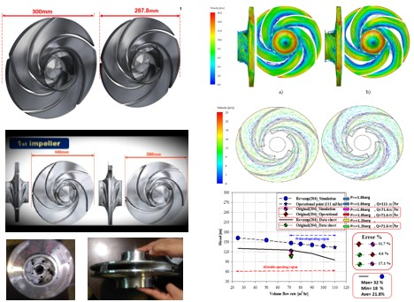

Comprehensive CFD Study of Impeller Redesign for P-202, P-204, P-401, and P-604 Pumps

| Pump ID | Flow Rate (m³/h) | Head (m) | Flow Increase (%) | Head Increase (%) |
|---|---|---|---|---|
| P-202 | 117.0 | 65.6 | 59.6 | 28.9 |
| P-204 | 111.0 | 133.0 | 55.0 | 8.1 |
| P-604 | 200.0 | 106.1 | 10.6 | 6.3 |
| P-401 | 335.3 | 596.3 | 30.2 | 29.9 |